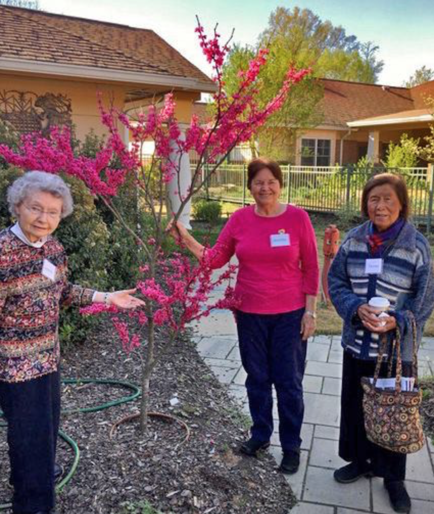
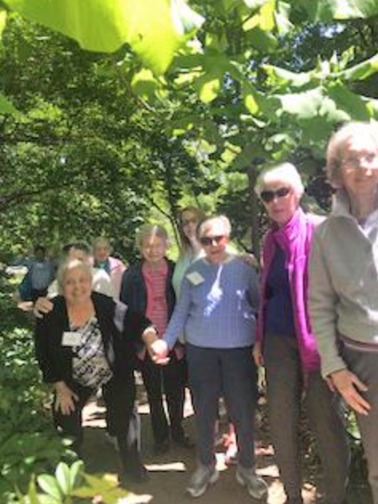

Help Out
Volunteer
There are many opportunities to volunteer with Charles House participants at our Daytime Eldercare Program and our two Eldercare Homes in Chapel Hill. Here are just a few:
- Share in conversation, reminisce with participants
- Help with recreation and life enrichment activities, outings
- Prepare program materials for activities and projects
- Interact with participants one-on-one or in small groups through reading, storytelling, games, gardening
- Lead or present activity programs such as arts and crafts, music
- Work on yard and building maintenance, gardening
- Serve as a substitute cook
- Assist with fundraising, marketing, even planning
- Help with administrative tasks
Do you have a special skill, talent or interest you would like to share with us? We welcome volunteers from the community. If you have questions or want to find out more about helping at Charles House, please contact the executive director by phone at 919-967-7570 or by email at info@charleshouse.org.
 
Donations
Now in our 25th year, Charles House Association continues serving the expanding needs of caregiving families in our community. Charles House is often a beacon of hope and support — providing valuable information about caregiving and community resources, and through our daytime eldercare center and Eldercare Homes, an innovative alternative to assisted living.
We are grateful to you for your generous support as Charles House is embarking upon the development of our second Eldercare Home, in the Winmore neighborhood in Carrboro. Your donations are especially important to this project and to continue our work for our elders and their families.
Your donations provide programming, scholarships, create and support Eldercare Homes, and enable Charles House Association to provide our community with compassionate, respectful, high-quality, personalized elder care, through Charles House-Hillcrest Daytime Eldercare Center, Charles House-Yorktown Eldercare Home, and the support that our families find in being part of our Charles House Family.
Supporters of Charles House
Charles House donors and supporters are invaluable partners in providing the kind of compassionate, personalized and respectful eldercare that we all deserve.
Friends of Charles House Giving Society
Grants:
- Bertsch Family Charitable Foundation
- Michael Bradley - In Memory of Rebecca Bradley - In Support of the Bradley Program in Learning and Service
- Residents of Carol Woods
- Carolina Meadows
- The Custer Family - In Memory of Lorena Custer
- Bonnie & David Custer
- Michal & Michael Custer
- Gary & Sherry Pelton
- Patricia Custer Storm
- Rebecca & John Trangenstein
- Home Health Foundation of Chapel Hill Endowment Fund of the Triangle Community Foundation
- Melvin Hurston - In Memory of Suellen Hurston
- The Family of Charles & Dorcas Jones
- Mary Jones Merritt Estate
- Betty Bradford and Family
- Nancy B. Jones - In Memory of Ruth & D.W. Brooks
- John B. Morris, III
- Nurse Care of North Carolina - In support of the Caregiver Resource Library at Charles House
- Molly & Paul Pratt
- Robert Seymour - In Memory of Pearl Seymour - In support of the Family Meeting Room UNC Healthcare
- The Whelan Family - In memory of Dorothy & Edward Whelan - In support of the Whelan Family Garden at Charles House
- Sheana & William Funkhouser
- Kathleen Leopold
- Dennis Whelan
- John Whelan
Platinum Members:
- Homewatch Caregivers
- Anthony & Julie Lindsey
Gold Members:
- Lorren Bryant - In Memory of Beulah Hackney
- Martin Key & Lori Marschall - In Memory of Jim Key
- Paul Klever & Sally Freeman
- Allison Lee
- Carol Lucas - In Memory of S. Ivy Nogle
- Lori Marschall & Martin Key - In Memory of Jim Key
- Linnea Smith
- Beth Tillman - In Memory of Dr. Clifford Tillman
- University Presbyterian Church
Silver Members:
- Janis & Jesse Basnight, Jr.
- Mary Beck - In Memory of Eloise Allison
- Dee Blake - In Memory of Maxine Blake
- Capital Development Services
- Peggy Cohn - In Memory of Sydney Cohn
- Community Church of Chapel Hill
- Howard & Jeanne Harper
- Anne & Tom Hastings - In Memory of Billie Smith Owensby
- Michael & Barbara Hill - In Memory of John & Sally Hill
- Mary Jenne & Phillip Washbourn - In Memory of Kurt Jenne
- Chad Lefteris - In Memory of Mollie Huntley Lefteris
- Resnick Family & Friends - In Memory of Ralph Resnick
- Caroline Resnick & Family
- Robert Levers & Peggy Levitt
- Lynn Q de Sherbinin Foundation
- Bruce & Jan McIntosh
- Barbara & James Parker
- Luke & Wendy Riggsbee
- Wilson Family - In honor of Ron Wilson
- Cherie & Ron Wilson
- Michele Flattum
- John & Margaret Cline
- Larry Morris
Donors To The Scholarship Fund And Annual Fund For Program Expansion:
Gifts in Honor of:
- Jay Boomer
- Kimberly Ring
- Roberta Butters
- Jonathan Butters
- Don Chandler
- Joseph Woodson
- Charles House Staff
- Vivian & Frank Aiello
- Linda & Paul Arhends
- Linda Baudoin
- Priscilla Boomer
- Carroll Cain
- Jack Reed & Kathryn Carpenter
- Brad Fox
- Lucy Gorham
- Dr. & Mrs. John Lane
- Ellie & Lisa Lee
- Cherie Rosemond
- Jim, Michele, Rob Schaefer & Lynda Cecere
- Florence Stein & Worth Bolton
- Judy Eastman
- William Eastman
- Chuck Fleming
- Kimberly Ring
- Nancy Fore
- Old Peak Finance
- Kathy & Sarah LaFone
- Drs. John & Barbara Holland
- Chapman
- Ema McGuire
- Enno Reckendorf
- Maureen Leney
- Alan and Joyce Snow
- Joy Murphy
- John C. & Jennifer B. Boger
- Robert Murphy
- Leah Paraschiv
- Cameron Cox
- Ben Reckendorf
- Enno Reckendorf
- Jack Reed
- Kathryn Carpenter
- Caroline Resnick
- Miriam Bloom
- Peggy Levitt & Robert Levers
- Bernard & Doris Ostroff
- Jerry Salak
- Rosemary Salak
- Lori Stewart
- Philip Sosna
- Ron Wilson
- Cherie Wilson
- Eloise Allison
- Mary Beck & Family Josephine Behrendt
- Elisabeth Curtis
- John Best
- Legislative Analysis Division/
- NC General Assembly
- Bettie “Beppie” Bradford
- Sibylle Barlow
- Donald & Susan Brewer
- Lisa Epner
- Brad Fox & Jane Oldham
- Pat & Don Kennedy
- Paul Klever & Sally Freeman
- Mary Ann Lasley Lewis
- Diane & David McIntee
- Enno Reckendorf
- Becky Bradley
- Pam Cuff & Tracy Lewis
- Ray Collins
- Donell Kerns
- Agnes Doberstein
- Catherine Beemer
- Woody Durham
- Lynn Fromme
- Paul Klever & Sally Freeman
- Lynn Eley
- Janet Eley
- Elsie Estroff
- Kimberly Early
- Linda & Harris Estroff
- Temme Barkin-Leeds & Steve Leeds
- Dieter Geratz
- Ulla Gerataz
- Peggy Glosson
- Deborah & Ed Hauser
- James “Jimmy” Gordon
- Brian & Amy Feezor
- Letitia Haworth
- Lance Haworth
- Joanna Barnes
- William “Bill” Hawkinson
- Martha & Richard Bell
- Agna Boass
- Marian & Tom Jerdee
- Barbara Koch
- Bev & Roy Milton
- Occupational & Physical Therapy friends of Cumber land County Schools
- Mary Yount
Gifts in Memory of:
- Mary Frances Jones Helmle
- Margaret Rider
- Dottie Jamgochian
- Scott Mitchell
- Charles & Dorcas Jones
- Nancy Bless
- .E. Darnell Jones, MD
- Connie Jones
- Jeffrey Kahler
- Anthony & Bonnie Armer
- Flicka Bateman
- Kristine Bergstrand & Robert Susick
- Joseph & Susan Cardamone
- Michele & DeWayne Dawley, Holly & Billy Allard, Carol & Ken Barsh
- Lynne Q de Sherbinin Foundation
- David & Cynthia Kahler
- Cindy Kahler & Family
- Lou & Ann Kingsland
- Allison Lee
- Marian Nattass
- Judith Ann Ondak
- Dan and Ann Stutzman
- Deborah & Hilary Wilson
- Frank Kohring
- Margaret Kohring
- Tim LaFone
- Drs. John & Barbara Holland Chapman
- Kathy LaFone
- Violet Lecus
- Bruce & Rhonda Lecus
- Mollie Huntley Lefteris
- Chad Lefteris
- Mrs. Louise Lightcap
- Mary Jones
- Robert Mace
- Denny Gulino
- Tack Melcher
- Nannette Melcher
- Cynthia Moser
- Cherie & Ron Wilson
- Terese Murphy
- Kate Green
- Paul Nettesheim
- Barbara Nettesheim
- Ivy Nogle
- Carol Lucas
- Gary Phillips
- Dick & Mary Anthony
- Joe & Florence Goben
- Donna Phillips
- Rex & Norma Pratt
- Jame & Mary Ragan
- Rich & Judy Gonzalez
- Ralph Resnick
- Lynne Q de Sherbinin Foundation
- Kathy Rose
- Chris Lillie
- Jerry Russell
- Mary Ann & Morris Froelich
- Frances Salak
- Rosemary Salak
- Bill Schweke
- Mark Barbash
- Jeffrey Brown
- Elizabeth Johnson
- Richard Kazis & Jill Medvedow
- Paul Klever & Sally Freeman
- Susan Lupton & Bob Schall
- Nancy Stark
- Frances de Usabel
- Debby Warren
- Earl Siegel
- Gladys Siegel
- Ralph Smialowicz
- The Smialowicz & Dunay Families
- Bebe G. Smith
- Susan Siegel
- Mildred & Charles Stern
- Ina Stern
- Harold Strauss
- Rebecca & Adam Blitstein
- Jennifer & Michael
- Chiswick-Patterson
- Ben & Susan Chicoski
- Les & Leslie Deman
- Shai & Alli Korman
- Susan Phillips
- Robin Polansky
- Yusheng Qu
- Soryl & Gerald Soiferman
- Mary Stevenson
- Beth Trilling
- Julia Studinka
- Judy Murray
- Harris Sturgess
- Carolyn Sturgess
- Pattie S. Warren
- Dick & Caroline Donnan
- Mrs. Delene Whack
- Mary Jones
Grants and other Contributions:
- Home Health Foundation of Chapel Hill Endowment Fund of Triangle
- Community Foundation
- Wide Waters Fund of Triangle Community Foundation
- Mary Berman Charitable Trust Shared Visions Foundation
- Community Church of Chapel Hill
- University Presbyterian Church
- Church of St. Thomas More
- Carol Woods Retirement Community
Human Services Grants
- Orange County
- Town of Chapel Hill
- Town of Carrboro
Donations to the Annual and Scholarship Funds:
- Aegis Home Care
- Dickie Andrews
- Alicia Ar
- Tony Armer
- Madelyn Ashley
- William Barney
- Jesse & Janis Bassnight, Jr.
- Susan Bernstein
- Lydia & Tom Berrong
- Jim & Jean Blaine
- Dr. & Mrs. Marvin Block
- Amanda Borer
- Christy Bowman
- Linda Brown
- Karen Brusseau
- Lorren Bryant
- James & Elizabeth Bryan, II
- Lorren Bryant
- Barbara Carman
- Art & Elizabeth Cleary
- Vici Cornelison Cook
- Jay & Barbara Cooper
- Jim & Roberta Copeland
- Mary Crane
- Arthur DeBerry
- Jo Anne & Shelley Earp
- Mike & Cathy Fields
- Michael Frawley
- Mary Ann Freedman
- David & Connie Freeman
- Sheana Whelan Funkhouser
- Jill Godwin
- Lucy Gorham
- Joe Hackney
- Don & Margie Hachten
- Nortin & Carol Hadler
- Jeanne C. Harper
- Sarah E. Haskell
- Michael & Barbara Hill
- Carol C. Hogue
- Nansi Gregor-Holt
- Don & Ellie Holloway
- Joan Huntley
- Gerda Hurow
- Mel Hurston
- Betty Hutton
- Paul & Jennifer Jansen
- Stan and Sydney Jenkins
- Mary Jenne & Phil Washburn
- Bonnie Joyner
- Marilyn & Ted Koenig
- Ernest & Eunice Kraybill
- Eric Larson
- Allison Lee
- Lillian Lee
- Kathleen Whelan Leopard
- William Leuchtenburg
- Sarah & Scott Madry
- Michael Massey
- Pat Merriman
- Joy & Paul Mermin
- Jim Mette & Barbara Brister
- Susan & James Moeser
- Coolie & Thad Monroe
- Daphne Morrell
- Joy Murphy
- Stephen Murphy
- Barbara Nettesheim
- Laurie Norman
- Ginger Norfleet
- Laurie Norman
- Joseph Parrish
- Stanley & Carolyn Peele
- Jaroslaw Pekar
- Sherry Pelton
- Brigid Poole
- Sandy Powers
- Grace Richter
- Carol Rist
- Jerry Salak
- Donna Scandlin & Rodney Magson
- Liane Senter
- Robert Seymour
- Gladys Siegel
- Jack & Carolyn Slavin
- Josie Smith
- Susan Smialowicz
- Joyce Sparling
- Lorely Stewart
- Flo Stein & Worth Bolton
- Jane Stein
- Harold & Laura Strauss
- Lori & Barry Tenser
- Beth Tillman
- Jane & Lee Thurston
- Becky Trangenstein
- Katie & Hunter Wagstaff
- Jim Watson
- Dennis Whalen
- William Whitehead & Jan Busby-Whitehead
- Robert Whyte
- Rachel Willis & Scott Cain
- Don Willhoit
- Ann Woodward & Howard Smither
- Helen Young
- Sheryl Zimmerman